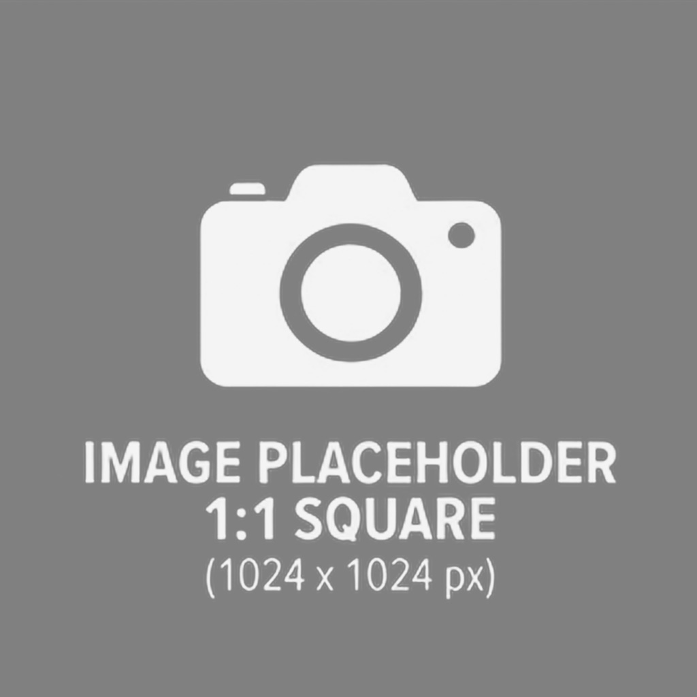
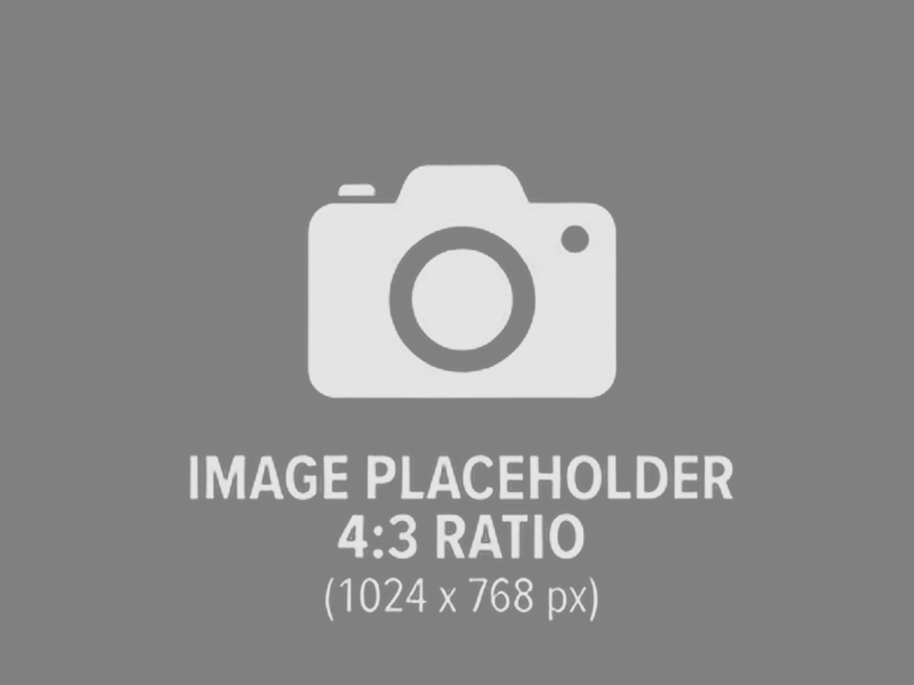
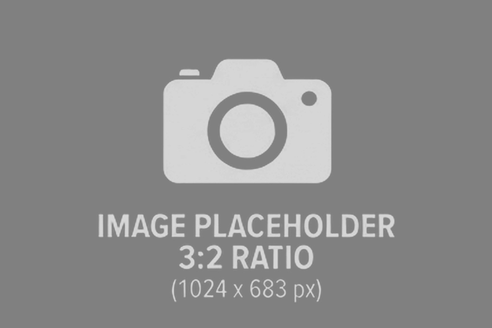

Инструменты
Калькуляторы и утилиты
Нагрузки, балки, фундаменты, армирование, конвертеры. Считают в браузере, результат — сразу на экране.
Бесплатно и без регистрации
Считайте нагрузки, балки, фундаменты и армирование онлайн. Для полного расчёта — настольные программы с отчётами и чертежами.
Инженерные инструменты Программы

Инструменты
Нагрузки, балки, фундаменты, армирование, конвертеры. Считают в браузере, результат — сразу на экране.
Программы
Настольные программы: расчётные сочетания, подбор арматуры, проверки по предельным состояниям, готовый отчёт.
Статьи
Разборы расчётов по СП, работа с результатами SCAD и ЛИРА-САПР, приёмы работы в Revit.
Выберите категорию — список обновится без перезагрузки страницы.
Постоянные и временные нагрузки по СП 20.13330 в одной таблице.
Нагрузки
Прогиб, изгибающий момент, поперечная сила, подбор сечения.
Металлоконструкции
Проверка давления под подошвой при внецентренном сжатии.
Фундаменты
Площадь рабочей арматуры для изгибаемого элемента.
Железобетон
Расчёт по СП 20.13330 с учётом района и профиля покрытия.
Нагрузки
кН, тс, кгс, МПа, кгс/см² — перевод инженерных величин.
Конвертеры
В этой категории инструменты появятся позже.
Программа
Расчёт и конструирование железобетонных элементов: балки, колонны, плиты. Расчётные сочетания, подбор арматуры, проверка по предельным состояниям и готовый отчёт для пояснительной записки.

Инструкции по расчётам, разборы нормативов и работа с расчётными комплексами.

Что подготовить до расчёта, какие характеристики грунта нужны и где чаще всего ошибаются в отчётах.

Настольные программы закрывают то, что не решается калькулятором: расчётные сочетания, оптимизацию сечения, отчёты и чертежи.